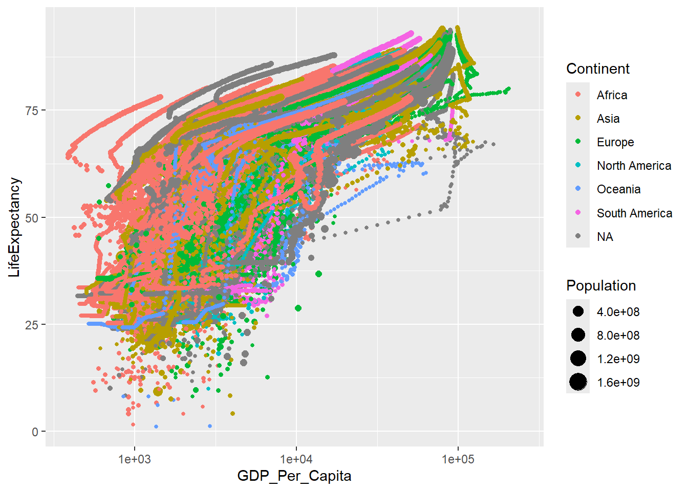
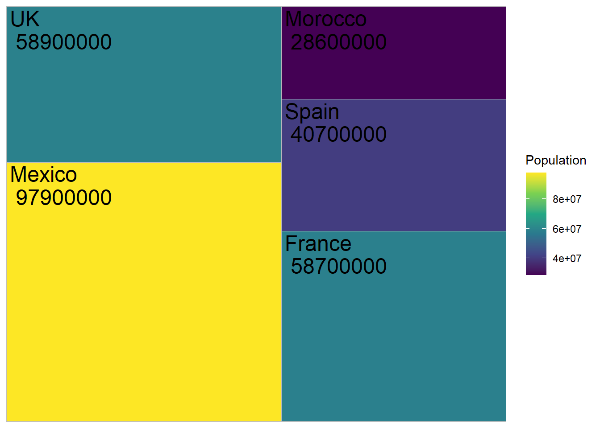
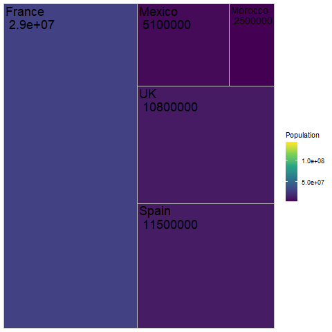

Chapter 9 Animation
Transitions allow you to animate by different variables By default, gganimate makes 100 frames. Themes help style the graphs!
Let’s have one code block to tinker with the graph design, and then a second block to tinker with the animation
9.0.1 Graph all years
all_country_data |>
ggplot() +
geom_point(aes(x = GDP_Per_Capita,
y = LifeExpectancy,
size = Population,
color = Continent)
) +
scale_x_log10() ## Warning: Removed 2079 rows containing missing values or values outside the
## scale range (`geom_point()`).
9.1 Create the animation
animation1 <- all_country_data |>
ggplot() +
geom_point(
aes(
x = GDP_Per_Capita,
y = LifeExpectancy,
size = Population,
color = Continent
)
) +
geom_text(x = 100000, y = 13, label = "{frame_time}") +
scale_x_log10() +
ggtitle("{frame_time}") +
theme(
panel.background = element_rect(fill = "lightblue",
colour = "lightblue",
linewidth = 0.5, linetype = "solid"),
panel.grid.major = element_line(size = 0.5, linetype = 'solid',
colour = "white"),
panel.grid.minor = element_line(size = 0.25, linetype = 'solid',
colour = "white")
) +
transition_time(Year) ## Warning: The `size` argument of `element_line()` is deprecated as of ggplot2
## 3.4.0.
## ℹ Please use the `linewidth` argument instead.
## This warning is displayed once every 8 hours.
## Call `lifecycle::last_lifecycle_warnings()` to see where this
## warning was generated.Render the animation
anim_speed <- 3
anim_duration <- (max(all_country_data$Year) - min(all_country_data$Year) + 1) / anim_speed
animate(animation1,
fps = anim_speed,
duration = anim_duration)save the animation
9.3 Animate a bar chart
bar_animation <- all_country_data |>
filter(country %in% c("Mexico", "UK", "Morocco")) |>
ggplot() +
geom_col(aes(y = country, x = Population)) +
transition_time(Year)
animate(bar_animation, nframes = 300)Save bar chart animation

Bar Chart Animation
9.4 Make a tree map
all_country_data |>
filter(Year == 2000) |>
filter(country %in% c("Mexico", "UK", "Morocco", "France", "Spain")) |>
ggplot(aes(area = Population,
fill = Population,
label = paste(country, "\n", Population))) +
geom_treemap() +
geom_treemap_text() +
scale_fill_viridis_c()
9.4.1 Animate a tree map
tree_animation <- all_country_data |>
filter(country %in% c("Mexico", "UK", "Morocco", "France", "Spain")) |>
ggplot(aes(area = Population,
fill = Population,
label = paste(country, "\n", Population))) +
geom_treemap() +
geom_treemap_text() +
transition_time(Year) +
scale_fill_viridis_c()
animate(tree_animation, nframes = 300)Save tree map animation

Bar Chart Animation